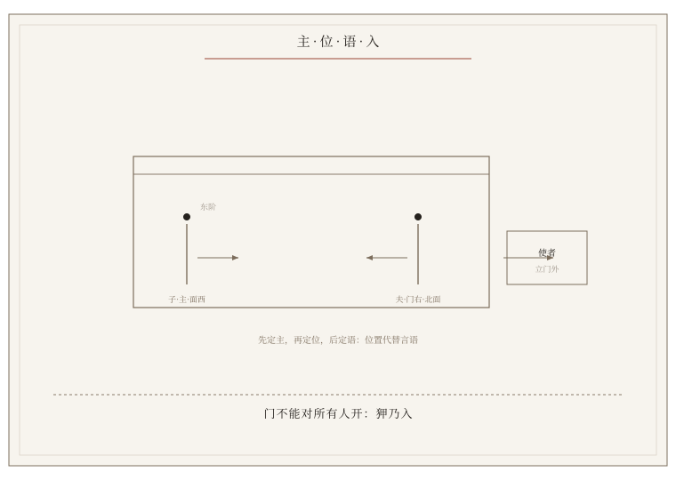

檀弓下 · 四·七 · 第 332 课
妻之昆弟为父后者死，哭之适室，子为主，袒、免、哭、踊。夫入门右，北面，辟正主。使人立于门外，告来者，狎则入哭。
说什么事：妻之兄弟中承父嗣者死了，哭在适室（正寝）；以己子为主，袒、免、哭、踊；夫入门右，北面，避正主之位；使人立在门外，告来吊者；相识狎习者才入哭。
落在哪一层：以「位」量哭。论「先定主，再定位，后定语」。
为何编在此位：三百三十一课论「辞」，此课论「主」——吊者来，先要知道拜谁。
【经】妻之昆弟為父後者死，哭之適室，子為主，袒、免、哭、踊。夫入門右，北面辟正主。使人立於門外，告來者，狎則入哭。
【注】以其正也。／親者主之。／辟正主。／狎，相習知者。
【经】父在，哭於妻之室。／非為父後者，哭諸異室。
【注】不以私喪干尊。
【经】有殯，聞遠兄弟之喪，哭于側室。無側室，哭于門內之右。
【注】嫌哭殯。／近南者為之變位。
【经】同國則往哭之。
【注】喪無外事。
【疏】適室，正寝也；《礼》：女子适人者，为昆弟为父后者不降，以其正故也；故姊妹之夫为之哭于適室之中庭也。「子为主」者，子，己子也；甥服舅缌，故命己子为主，受吊拜宾也。「袒免哭踊」者，冠尊，不居肉袒上，必先免，故凡哭哀则踊，踊必先袒，袒必先免。「夫入门右」者，夫谓此子之父，即哭妻兄弟者也；言「夫」者，据妻之为丧也；子既为主位，在东阶之下西向，父入门右，近南而北向哭也……「使人立于门外，告来者」者，以门内有哭，则乡里闻之必来相吊，故主人所使人出门外，告语来吊者，述所哭之由，明为主在子，不关己也。「狎则入哭」者，若吊人与此亡者曾经相识狎习，当进入共哭。「父在，哭于妻之室」者，此夫若父在，则適室由父，故但于妻室之前而哭之。「非为父后者，哭诸异室」。「有殡，闻远兄弟之丧，哭于侧室」，「无侧室，哭于门内之右」，「同国则往哭之」——上云闻远兄弟之丧，谓异国也；所以同国则往哭、异国则否者，以其已有丧殡，不得向他国，故郑云「丧无外事」。
妻之昆弟 妻的兄弟。
为父后 承父之嗣，即嫡长。
适室 正寝。音嫡。
子为主 以己子为丧主。
袒 去上衣左袖，露左臂。
免 去冠而以布缠髻。音问。
踊 顿足而哭。
辟正主 避开正主之位。辟，避。
狎 相习知，熟识。
侧室 庶子之室，非正寝。
异室 他室。
丧无外事 有丧则不得外出。
妻的兄弟中承嗣的那一位死了，在正寝哭他；以己子为丧主，袒、免、哭、踊；夫进门的右侧，面向北，避开正主之位；派一人立在门外，通告来吊的人；熟识者才进去同哭。
此节像一份「办事流程」：先定主（子为主），再定位（夫入门右北面），再定语（使人门外告来者），再定入（狎乃入哭）。
四处一定，众不乱。这是礼最实用的一面：它不只说「应当哀」，还说「谁站哪里、谁先说话」。
第一层 主不是最亲者，是有服者 妻之昆弟死，夫无服（妻党之服有限），故不能为主；己子服舅缌，故命己子为主，「受吊拜宾」。
礼的「主」，是「能受吊的人」，不是「最难过的人」。这一条极重要：主是礼的位置，不是情的深浅。
第二层 「夫入门右北面」：一个朝向解决两个主 夫不为主，若也站在西向的主位，便像「二主」。故入门右、北面，避开。
疏推郑意，引《曾子问》卫灵公吊季康子，鲁哀公为主、康子立门右北面为证。一个朝向，就把「谁为主」说明白了，不必言语。
礼常常这样：用位置代替言语。今人开会排座次，也是此理；但礼的座次有「避」的讲究——避，比占更难。
第三层 「使人立于门外，告来者」：预先声明 门内有哭，乡里必来吊。故先派人在门外，向来者说明「为主在子，不关己」。
这是极聪明的一步：让人在进门之前就知道该拜谁。免得进门拜错，两下难堪。
礼的周到，往往在「门」这一处——进门之前的一刻。
第四层 「狎则入哭」：按熟不熟分入不入 相识狎习者才进去同哭；否则门外致意。
礼把「入不入门」当作一条独立的规范：不是所有来吊者都能进门。门内有主、有位、有哭，故门不能对所有人开。
第五层 末尾三条：与三百一十四课互见 「有殡，闻远兄弟之丧，哭于侧室」——自家有殡，不能在家正室哭他人的丧，故哭于侧室；无侧室，则哭于门内之右（近南，为变位）。
「同国则往哭之」——同国则往，异国则不往，因为「丧无外事」。
这正与三百一十四课「虽缌必往」互见：彼是「有殡而骨肉之丧必往」（承前文之亲），此是「有殡而远兄弟之丧，异国则不往、同国则往」。两处合看，才是全义：亲必往，远则视疆。
与今日何干 今人办丧，主丧之人常乱：谁该站哪、谁该受吊，多临时指派。此节给的形是：先定主，再定位，再定语。三步定完，众不乱——不必靠嗓门，靠位置。
| 左 | 右 |
|---|---|
| 适室 | 正寝 |
| 子为主 | 有服者受吊 |
| 夫入门右 | 避正主 |
| 北面 | 不二主 |
| 使人门外 | 预告为主在子 |
| 狎则入哭 | 熟者乃入 |
| 父在哭妻室 | 不以私丧干尊 |
| 同国往哭 | 异国则不 |
画一处正寝之内，视点平视略俯。堂上东阶之下立一人（子，主位），面西，衣素；门内右侧立一人（夫），面北，衣素而位稍后；门外阶下立一人（使者），面内向。三人之间以地面浅线示其位，不作人面。不写文字。赭色只用在东阶下一道，与门外使者衣摆一道。
